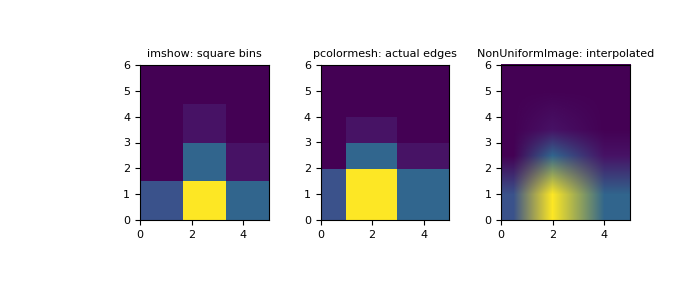

numpy.histogram2d¶
-
numpy.histogram2d(x, y, bins=10, range=None, normed=None, weights=None, density=None)[source]¶ Compute the bi-dimensional histogram of two data samples.
- Parameters
- xarray_like, shape (N,)
An array containing the x coordinates of the points to be histogrammed.
- yarray_like, shape (N,)
An array containing the y coordinates of the points to be histogrammed.
- binsint or array_like or [int, int] or [array, array], optional
The bin specification:
If int, the number of bins for the two dimensions (nx=ny=bins).
If array_like, the bin edges for the two dimensions (x_edges=y_edges=bins).
If [int, int], the number of bins in each dimension (nx, ny = bins).
If [array, array], the bin edges in each dimension (x_edges, y_edges = bins).
A combination [int, array] or [array, int], where int is the number of bins and array is the bin edges.
- rangearray_like, shape(2,2), optional
The leftmost and rightmost edges of the bins along each dimension (if not specified explicitly in the bins parameters):
[[xmin, xmax], [ymin, ymax]]. All values outside of this range will be considered outliers and not tallied in the histogram.- densitybool, optional
If False, the default, returns the number of samples in each bin. If True, returns the probability density function at the bin,
bin_count / sample_count / bin_area.- normedbool, optional
An alias for the density argument that behaves identically. To avoid confusion with the broken normed argument to
histogram, density should be preferred.- weightsarray_like, shape(N,), optional
An array of values
w_iweighing each sample(x_i, y_i). Weights are normalized to 1 if normed is True. If normed is False, the values of the returned histogram are equal to the sum of the weights belonging to the samples falling into each bin.
- Returns
- Hndarray, shape(nx, ny)
The bi-dimensional histogram of samples x and y. Values in x are histogrammed along the first dimension and values in y are histogrammed along the second dimension.
- xedgesndarray, shape(nx+1,)
The bin edges along the first dimension.
- yedgesndarray, shape(ny+1,)
The bin edges along the second dimension.
See also
histogram1D histogram
histogramddMultidimensional histogram
Notes
When normed is True, then the returned histogram is the sample density, defined such that the sum over bins of the product
bin_value * bin_areais 1.Please note that the histogram does not follow the Cartesian convention where x values are on the abscissa and y values on the ordinate axis. Rather, x is histogrammed along the first dimension of the array (vertical), and y along the second dimension of the array (horizontal). This ensures compatibility with
histogramdd.Examples
>>> from matplotlib.image import NonUniformImage >>> import matplotlib.pyplot as plt
Construct a 2-D histogram with variable bin width. First define the bin edges:
>>> xedges = [0, 1, 3, 5] >>> yedges = [0, 2, 3, 4, 6]
Next we create a histogram H with random bin content:
>>> x = np.random.normal(2, 1, 100) >>> y = np.random.normal(1, 1, 100) >>> H, xedges, yedges = np.histogram2d(x, y, bins=(xedges, yedges)) >>> H = H.T # Let each row list bins with common y range.
imshowcan only display square bins:>>> fig = plt.figure(figsize=(7, 3)) >>> ax = fig.add_subplot(131, title='imshow: square bins') >>> plt.imshow(H, interpolation='nearest', origin='low', ... extent=[xedges[0], xedges[-1], yedges[0], yedges[-1]])
pcolormeshcan display actual edges:>>> ax = fig.add_subplot(132, title='pcolormesh: actual edges', ... aspect='equal') >>> X, Y = np.meshgrid(xedges, yedges) >>> ax.pcolormesh(X, Y, H)
NonUniformImagecan be used to display actual bin edges with interpolation:>>> ax = fig.add_subplot(133, title='NonUniformImage: interpolated', ... aspect='equal', xlim=xedges[[0, -1]], ylim=yedges[[0, -1]]) >>> im = NonUniformImage(ax, interpolation='bilinear') >>> xcenters = (xedges[:-1] + xedges[1:]) / 2 >>> ycenters = (yedges[:-1] + yedges[1:]) / 2 >>> im.set_data(xcenters, ycenters, H) >>> ax.images.append(im) >>> plt.show()
